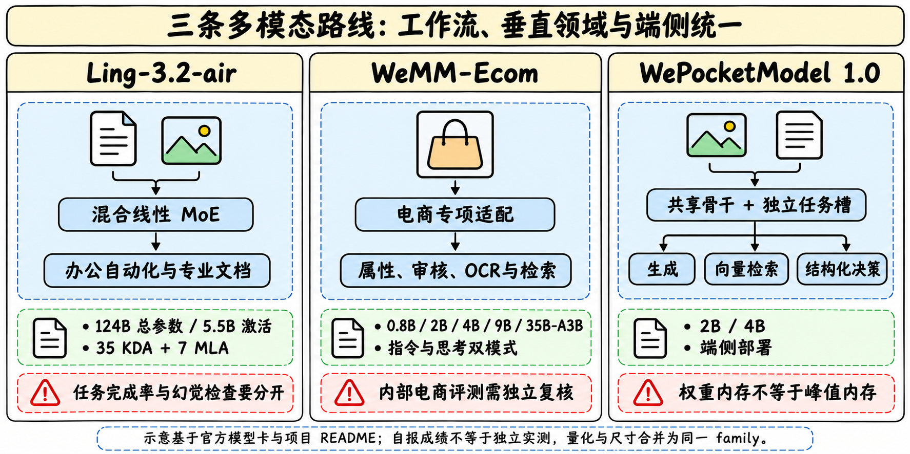
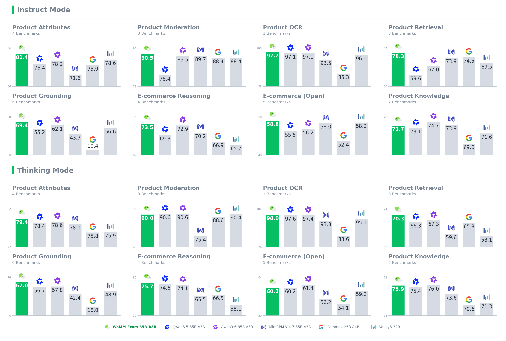
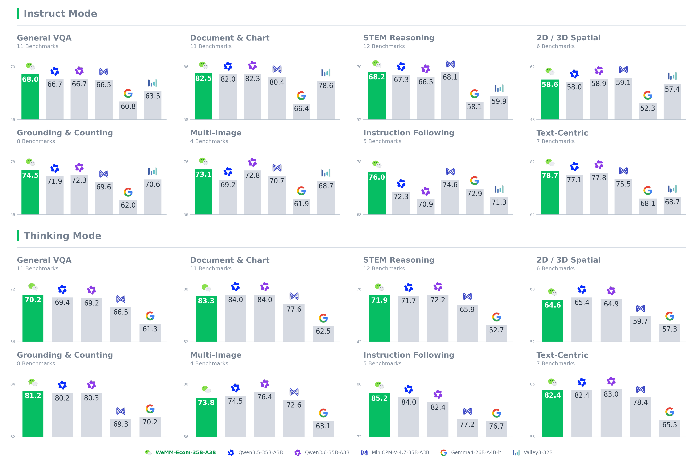

WeMM-Ecom — 电商内容理解的一族尺寸与双思考模式

Family与结构
| 尺寸 | 语言骨干层 / hidden | 结构 | 配置最大位置 |
|---|---|---|---|
| 0.8B | 24 / 1024 | dense Qwen3.5 | 262144 |
| 2B | 24 / 2048 | dense | 262144 |
| 4B | 32 / 2560 | dense | 262144 |
| 9B | 32 / 4096 | dense | 262144 |
| 35B-A3B | 40 / 2048 | 256路由专家、top8，约3B激活 | 262144 |
BF16/FP8/GPTQ/GGUF是checkpoint格式，不能把打包存储元素当实际参数或训练代际。视觉/语言总参数统计与简称有舍入，显存还含全权重、KV和视觉activations。35B卡声明text/image/multi-image/video；视频16帧只是QuickStart示例，不等于视频benchmark固定设置。
领域任务与全部分组

| 电商组 | benchmark数 | 35B指令 | 35B思考 |
|---|---|---|---|
| Product Attributes | 4 | 81.4 | 79.4 |
| Product Moderation | 3 | 90.5 | 90.0 |
| Product OCR | 1 | 97.7 | 98.0 |
| Product Retrieval | 3 | 78.3 | 70.3 |
| Product Grounding | 6 | 69.4 | 67.0 |
| E-commerce Reasoning | 4 | 73.5 | 75.7 |
| E-commerce Open | 5 | 58.8 | 60.2 |
| Product Knowledge | 2 | 73.7 | 75.9 |
这是我按官方图转录的分组均分；完整逐benchmark及比较模型见原图，不能把分组不加权均值冒充28题均值。指令检索78.3→思考70.3和属性81.4→79.4说明更多思考不保证结构任务增益；思考审核90.0低于部分基线90.6。Product Knowledge指令73.7低于Qwen3.6的74.7，保留反例。

| 通用组 | benchmark数 | 指令 | 思考 |
|---|---|---|---|
| General VQA | 11 | 68.0 | 70.2 |
| Document & Chart | 11 | 82.5 | 83.3 |
| STEM | 12 | 68.2 | 71.9 |
| 2D/3D Spatial | 6 | 58.6 | 64.6 |
| Grounding & Counting | 8 | 74.5 | 81.2 |
| Multi-Image | 8 | 73.1 | 73.8 |
| Instruction Following | 1 | 76.0 | 85.2 |
| Text-Centric | 7 | 78.7 | 82.4 |
思考Document83.3低于两Qwen基线84.0，空间64.6低于65.4/64.9，多图73.8低于74.5/76.4。卡称电商平均比Qwen3.5高3.92、Qwen3.6高3.36、MiniCPM-V4.7高8.22；通用比Qwen3.5高0.17。缺统计误差、统一harness、内部数据与公开集权重，0.17不能称稳定显著领先。
部署、模式与预算
默认thinking开启，通过enable_thinking选择；指令通用temperature0.7/top_p0.8/top_k20，思考通用1.0/0.95/20。结构指令presence_penalty0，普通指令1.5；推理指令改1.0/1.0/top_k40/presence2；思考OCR/实体/SKU为presence2/repetition1.05，其余重复惩罚1.0。API额外参数与Transformers generate支持面不同，不能直接照抄所有字段。
原卡推荐Transformers≥5.2、vLLM≥0.31、SGLang≥0.5.15，reasoning parser qwen3。这些是本轮官方文档条件，不是已经安装验证的环境。原生窗口262144，服务示例32768要容纳输入和输出；65,536输出预算不能在32768服务窗口下直接照用。多轮只保存final answer、媒体顺序与坐标格式都应固定。工具例程未执行。
研究判断、缺口与来源
建议固定五尺寸的输入分辨率、帧采样、输出token和同harness，比较指令/思考对属性、匹配与推理的影响；分离真实业务分布、公开bench和内部集合，并记录同商品/店铺泄漏。量化模型须单独复测坐标、OCR、schema和延迟。现有材料无训练token、领域/通用配比、SFT/RL顺序和消融；不以“专项适配”推出未披露的训练算法。
- 官方35B卡、9B卡、官方Collection。
- 官方HF活动；GitHub与独立报告访问缺口保留。
- WePocketModel-1.0、Qwen3.5：共享骨干与领域适配的不同路线。
📊 相关可视化: wemm_ecom_poster_zh.html